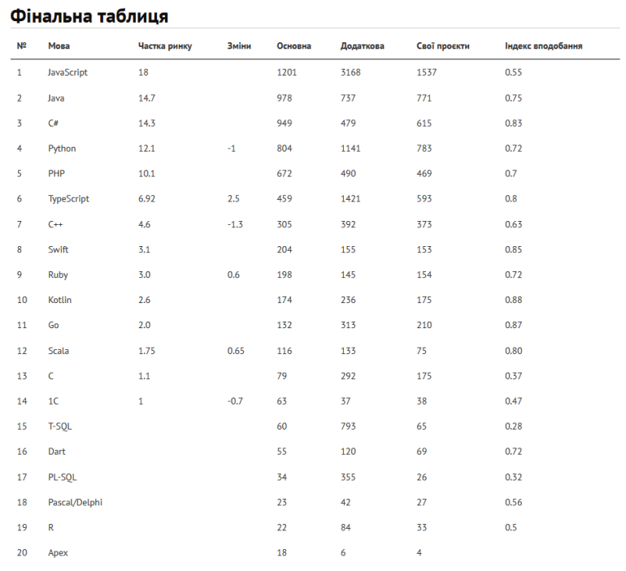

Рейтинг популярних в Україні мов програмування 2021
року: в лідерах
JavaScript, Java, C#, Python
зменшується, а
TypeScript росте
Український профільний ресурс DOU.UA провів чергове щорічне опитування щодо мов
програмування, в рамках
якого було
зібрано 7211 анкет (92% респондентів перебувають в Україні).
З цікваого — уперше з 2014 року в
Python
негативна
динаміка, спостерігається тенденція переходу
з JavaScript на TypeScript, найбільш задоволені
користувачі
Eliхir, і
нарешті на карті з’явився Rust.
Насамперед привертає увагу зростання TypeScipt: схоже, він із часом стане основною мовою в
екосистемі
JavaScript. Цього
року він уперше обійшов С++ за популярністю. Ще з цікавого: вперше
за декілька років зниження
частки
Python: можливо,
використання Data Science дійшло до точки
насичення. Уперше з 2012 року зросла частка C#.
Використання
Java продовжує
зменшуватись,
хоч і не так активно, як раніше. Загалом видно зменшення частки JVM: частка Kotlin
стабільна
(хоча він і
поступився місцем Ruby), використання Scala відновилося після значного зниження у
2019-му і
сьогодні,
якщо порівнювати з
2018-м, навіть трохи зросло. Ще варто відмітити незначне
зростання Dart.
Нижче діаграма з динамікою щодо актуальних мов програмування за роками. Статистично
значущими є
зміни для
C++,
TypeScript, Ruby, 1C, Scala, Pascal/Delphi, T-SQL. Нагадаємо, що зміни
статистично значущі, якщо з
вірогідністю 95% ми
не можемо отримати результати зі змінами та
без, якщо будемо рівномірно обирати дві групи
респондентів з
однієї
популяції.
Приблизно половина розробників, що взяли участь у опитуванні — це бекенд (52%), далі сегменти
вебфронтенду (19%) та
мобільної розробки (її ще менше, ніж вебу — 8%), обробка масивів даних
(туди належать і Big Data та
машинне навчання) —
6%. Desktop-програмування ще існує та займає
4% обсягу, системне програмування — 3% (наразі
невелика
частка) і
Full-Stack розробка —
приблизно 1%.
Очікувано залежно від сфери використовують різні мови, так, основні мови бекенду — це Java, C#
та
PHP.
Частка JavaScript
і TypeScript є, але не така велика й порівнювана з часткою Ruby та Go. У
десятку головних мов
бекенду
також входять
Scala та С++. Фактично весь фронтенд пишуть на
JavaScript і TypeScript. Використання інших мов суто
маргінальне.
TypeScript’у порівняно менше.
Цікаво буде подивитися на це співвідношення за рік. У мобільній
розробці
основні мови —
Kotlin
та Swift. А частка кросплатформових фреймворків менша, ніж здається. Крім того, помітно, що
Dart/Flutter відразу
зайняли велику нішу. А після React Native та Flutter є ще місце для С# Xamarin.
Серед обробки даних
беззаперечним
лідером є Python, далі — мови маніпуляції даними T-SQL та
PL-SQL. Особливе місце займають Scala
(тут
вона більш
поширена, ніж Java) і R. Також фахівці
назвали особисті вподобання, бажання вивчити нові мови та
додаткові дані:
Фінальна таблиця рейтингу мов програмування 2021 року виглядає наступним чином:
Повну версію дослідження та результати попередніх опитувань можно побачити за наступним посиланням.
Джерело: DOU.UA